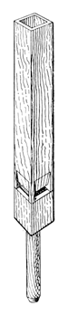
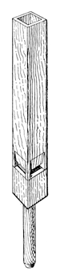

|
Seraphonflöte German Seraphonpfeife German |
According to Audsley, the Seraphonpfeife was invented by either G. F. Weigle or W. F. Weigle; Audsley seems to have been confused as to which Weigle was responsible. No other source mentions a G. F. Weigle, but we know of two organ-builders of that family: Carl Gottlieb Weigle (1810-1882) and his son Wilhelm Theodor Friedrich Weigle (1850-1906). The stop was first introduced in the organ in the City Church of Wertheim, Baden, Germany. It was a large scale open metal flute with two mouths placed adjacent to each other, as shown in Audsley's illustration reproduced here. Weigle also made a wooden form, as shown in illustrations by Audsley (below) and Wedgwood (right). Irwin claims that Jubalflöte is a synonym.
Weigle reportedly invented a number of other �seraphon� stops, both flues and reeds, all of which spoke loudly on high pressure wind. Of these, only the Seraphongedeckt is mentioned in the literature. In Osiris we find in the 1927 Behmann organ at St. Martin, Dornbirn, Austria stops named Seraphon Prinzipal 8' and Seraphon Violine 8', and in the 1907 Seifert organ in the Marienbasilika, Kevelaer, Germany we find stops named Seraphon-Octave and Seraphon-Gamba. These are the only known examples of the seraphon class of stops. According to Wedgwood, the name derives from the Hebrew word saraph, meaning �to burn�, a reference to the biblical �flaming angels�
See also Stentorphone, Doppelflöte.Seraphonflöte 8'; St. Sebalduskirche, Nürnberg, Germany; Strebel.
|
Original website compiled by Edward L. Stauff. For educational use only. Seraphonflote.html - Last updated 15 December 2001. |
Home Full Index |
{kind=link}
{kind=link}